Propuesta comercial · Sporthesis · Confidencial
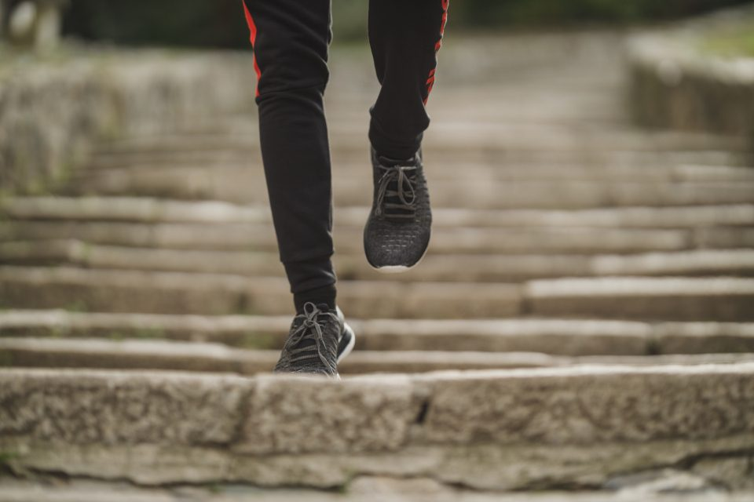
Sporthesis genera consultas. Lo que no está funcionando es lo que pasa entre la consulta y la venta. Una propuesta para ordenar el circuito completo —contenido, pauta, conversión y datos— antes de invertir más.
Popcorn es una agencia de marketing, comunicación y creatividad que trabaja desde una mirada de negocio. Para Sporthesis no proponemos “hacer más pauta”: proponemos diseñar el sistema completo que convierte una consulta en un turno, y un turno en una venta.
Empezamos por el objetivo comercial —ventas, CAC, ticket— y desde ahí definimos las acciones. Nunca al revés.
Años trabajando con hospitales, centros médicos y laboratorios. Entendemos pacientes, derivantes y decisiones de alta consideración.
Estrategia, contenido, diseño, audiovisual, performance y desarrollo web bajo un mismo equipo. Un solo interlocutor, un solo criterio.
Trabajamos con instituciones donde cada palabra importa: hospitales, laboratorios, centros de diagnóstico y medicina laboral. Sabemos dónde está el límite entre explicar un beneficio y prometer un resultado clínico —un límite que en el rubro de Sporthesis es especialmente delicado.
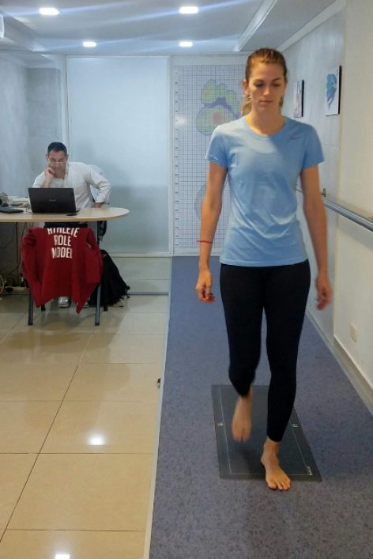
 Hospital Universitario AustralSalud · Alta complejidad
Hospital Universitario AustralSalud · Alta complejidad Swiss MedicalMedicina prepaga
Swiss MedicalMedicina prepaga ManLabLaboratorio
ManLabLaboratorio CETAC JuncalDiagnóstico & tratamiento
CETAC JuncalDiagnóstico & tratamiento CMI Fitz RoyMedicina laboral
CMI Fitz RoyMedicina laboral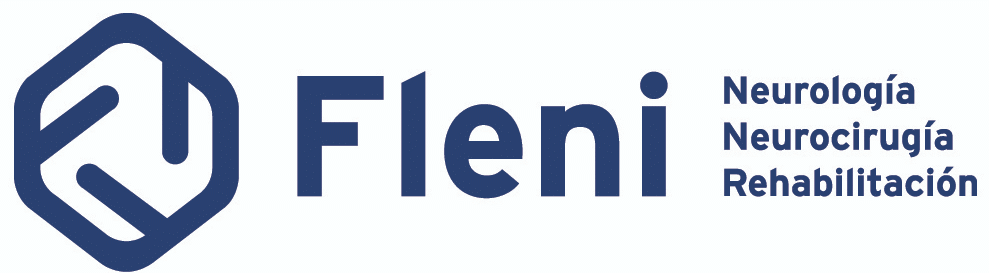
FLENINeurología Instituto Alexander FlemingOncología
Instituto Alexander FlemingOncología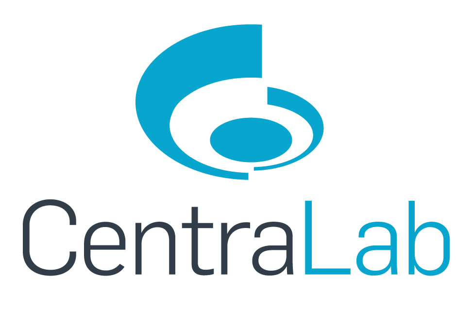
CentraLabLaboratorio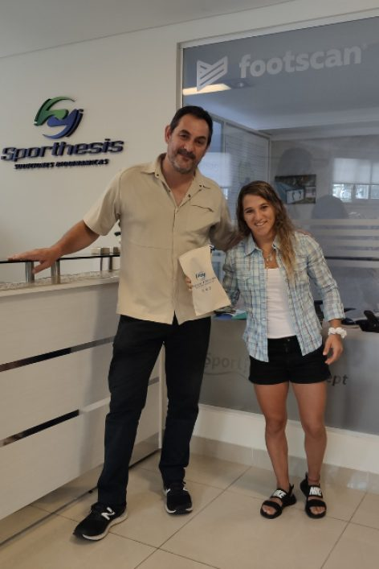
Desde 2008 Sporthesis hace análisis de pisada y plantillas personalizadas, con tecnología Footscan, consultorio propio en Olivos y una red de franquicias. Hay producto, hay proceso, hay prestigio y hay profesionales que derivan pacientes. Lo que no hay es un circuito digital que convierta ese activo en ventas de manera previsible.
El estudio en consultorio forma parte del proceso de elaboración y está incluido en el valor.
Sitio institucional, ecommerce, Instagram y WhatsApp como puerta de entrada real.
Esta propuesta trabaja el negocio propio de Sporthesis. La comunicación de franquicias queda fuera de alcance.
Sporthesis tiene un diseñador que conoce la marca hace años. No proponemos reemplazarlo: proponemos potenciarlo.
Fuente · Todo lo que sigue surge de la reunión comercial con Lucas y de la información pública de Sporthesis. Donde hay una recomendación nuestra, está señalada como tal.
No hace falta una auditoría para ver el problema: está en los datos que ya tiene Sporthesis. Estos son los que nos compartió Lucas, y lo que se deduce de ellos.
Con ~70 consultas y ~5 ventas mensuales, 9 de cada 10 personas que levantan la mano no compran. Y hubo períodos prolongados con cero conversiones.
Sumando la inversión publicitaria mencionada (+$400.000/mes) y el fee de la agencia actual ($480.000–$500.000/mes) sobre ~5 ventas mensuales. Es el número que hay que atacar.
Del gasto mensual total, más de la mitad es honorario de agencia y menos de la mitad llega al mercado como pauta. Sin creatividades, sin redes y sin Google.
Cómo leer esto · Los tres cálculos son estimaciones derivadas de los datos que se mencionaron en la reunión, no mediciones auditadas. La auditoría inicial los confirma o los corrige con datos del CRM y de las plataformas.
Ninguno se resuelve subiendo el presupuesto. Todos se resuelven ordenando el circuito.
La campaña llegó a estar configurada para toda la Argentina con un consultorio propio en Olivos. Cada peso que impacta a alguien que no puede llegar al turno es un peso perdido. Se resuelve: reestructurando campañas por objetivo y por radio real de captación.
Hoy se pautan piezas pensadas para el feed, no para vender. No existen creatividades diseñadas para captar demanda, ni versiones por público o por ángulo. Se resuelve: produciendo piezas específicas para pauta y testeando mensajes.
El feed comunica bien hacia el deportista, pero el equilibrio entre educar y vender está corrido. El ritmo de producción también es lento. Se resuelve: con un plan editorial que balancee contenido educativo y contenido de venta, y con producción propia de material.
Durante la reunión probamos el formulario del sitio institucional y no quedó claro que se hubiera enviado. Si el usuario duda, el lead no existe. La Tienda Nube funciona mejor, pero registra ~1 venta mensual y obliga a coordinar el turno por WhatsApp después de pagar. Se resuelve: con una landing de campaña con formulario confiable y WhatsApp directo.
Lucas registra en el CRM de dónde viene cada lead y qué pasó con él. Esa información no vuelve a Meta. Las plataformas optimizan a “consultas”, no a ventas reales. Se resuelve: conectando conversiones offline y optimizando a venta, no a volumen.
El deportista es y sigue siendo el público principal. Pero postura, horas sentado, sobrepeso, dolores de rodilla o pies y calzado inadecuado son territorios que hoy casi no se comunican —y donde hay demanda con capacidad de pago.
Aumentar la inversión sobre un circuito que pierde en cinco puntos no genera más ventas: genera más consultas perdidas y un costo por venta más alto. El orden importa tanto como las acciones.
Auditar campañas, activos digitales, públicos y CRM. Definir objetivos de venta, KPIs y ejes de comunicación. Sin esta base, todo lo que sigue es intuición.
Landing que convierta, WhatsApp integrado, creatividades específicas para pauta y contenido con foco comercial. Mejorar lo que pasa después del clic.
Que el CRM le devuelva a Meta y a Google qué lead terminó en venta. Recién ahí las plataformas dejan de optimizar a volumen y empiezan a optimizar a facturación.
Aumentar inversión solo sobre los públicos, ángulos y canales que ya demostraron rentabilidad. Crecer sobre certezas, no sobre supuestos.
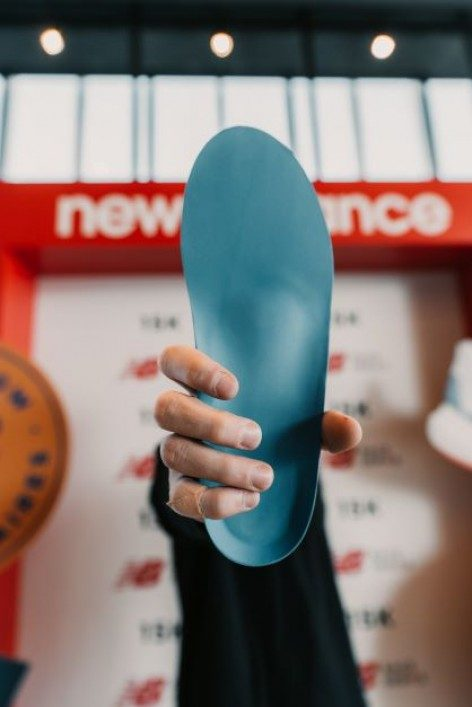
El objetivo de los primeros 90 días no es gastar más. Es que cada consulta valga más.
Si con las mismas ~70 consultas mensuales la conversión pasa de ~7% a ~12%, las ventas casi se duplican sin sumar un peso de pauta. Ese es el primer objetivo. La escala viene después.
Cada venta de Sporthesis recorre este camino. Hoy tres de sus ocho estaciones pierden gente. Trabajar solo una no alcanza: hay que ordenar el recorrido entero.
Instagram, búsqueda, boca a boca, derivantes
Informativo, con poco gancho comercial
Sin creatividades propias, sin Google
Formulario sin confirmación clara
Puerta de entrada real de la consulta
Respuesta, precio, coordinación del turno
Estudio + plantilla en el consultorio
Registra, pero no le devuelve datos a la pauta
Hoy el feed y la pauta le hablan casi exclusivamente al deportista. Es el consumidor principal y tiene que seguir siéndolo. Pero hay un universo mucho más amplio de personas que sufren las consecuencias de una mala pisada sin identificarse jamás como “deportistas” —y que tienen capacidad de pago para una solución personalizada.
Estos no son públicos definitivos: son territorios a validar con datos en los primeros 60 días de campaña.
Runners, tenis, fútbol, entrenamiento. El núcleo actual: performance y prevención de lesiones.
Trabajo de escritorio, poca actividad, molestias que aparecen al pararse o caminar.
Rodillas, pies, espalda. Personas que ya probaron otras soluciones sin resultado.
Mayor carga sobre la pisada. Un ángulo que exige mucho cuidado en el tono y el respeto.
Quienes pasan el día con calzado que no acompaña. Territorio de comodidad, no de patología.
Ya usaron plantillas y necesitan reemplazarlas. El público más barato de convertir.
Pacientes que llegan por indicación de un profesional. Alta intención, cero costo de medios.
Hay que dejar clarísimo qué significa comprar el producto propio de Sporthesis y no el de una franquicia. Es la diferencia que hoy no se está comunicando.
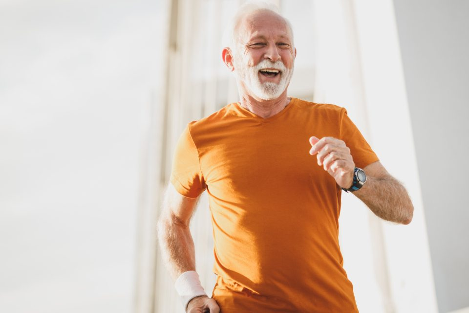
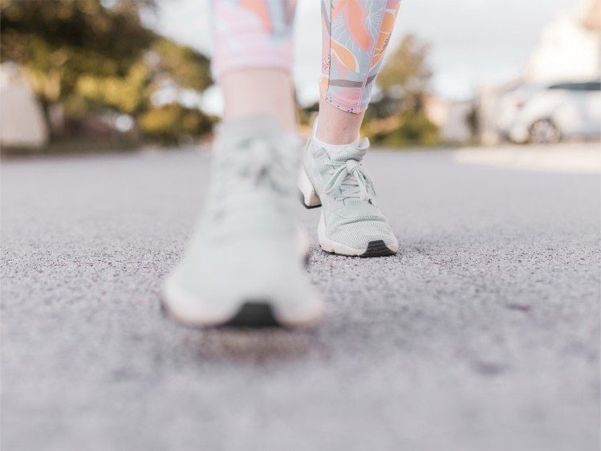
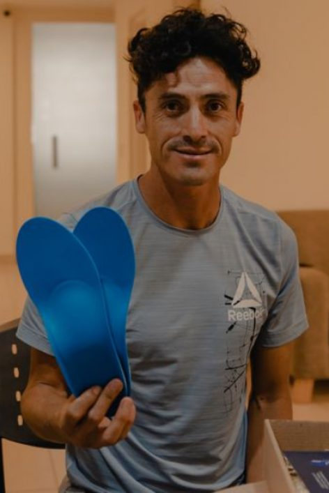
Es la base sobre la que se apoya todo lo demás. Sin esto, cualquier acción posterior es una apuesta.
Ordenamos las bases antes de invertir en pauta: relevamos a la competencia directa e indirecta —franquicias, otras marcas de plantillas y calzado ortopédico—, definimos los ejes de contenido que van a guiar la comunicación de la marca, establecemos un manual de tono y voz que unifique el discurso en todos los canales, y segmentamos los distintos públicos a los que Sporthesis le habla hoy, con un mensaje diferenciado para cada uno.
Este trabajo funciona como la base sobre la que se construyen todas las acciones posteriores, tanto orgánicas como pagas. Incluye además la revisión del CRM y de la trazabilidad de leads, para saber qué se puede medir hoy y qué falta.
Horas mensuales de un estratega de cuentas dedicado al seguimiento integral de la marca: análisis de resultados de pauta y contenido, detección de oportunidades de mejora comercial —por ejemplo, en el proceso de venta o en la conversión de consultas—, monitoreo del mercado y la competencia, y definición conjunta de la planificación de contenidos y piezas publicitarias del mes.
Es la instancia donde se conecta lo que pasa en las plataformas con lo que pasa en el consultorio, para que las decisiones de inversión y estrategia estén siempre respaldadas por datos reales de venta.
El problema no es que el contenido sea malo: es que el contenido del feed y las piezas de pauta tienen objetivos distintos y hoy son lo mismo. Además hace falta materia prima nueva: material del consultorio, del proceso y de las personas reales.
Diseñamos el calendario editorial mensual con foco en balancear contenido informativo con contenido de venta —hoy uno de los puntos débiles detectados—, incorporando los públicos y ejes definidos en la estrategia inicial.
La planificación, la redacción de copies y la dirección de arte de cada pieza son siempre nuestras, en las dos opciones. Lo único que cambia entre una y otra es quién produce gráficamente las piezas.
Sporthesis ya cuenta con un diseñador propio que conoce la marca hace años. Ese conocimiento es un activo, no un problema a resolver: nosotros aportamos el plan, los copies y la dirección de arte de cada pieza, y su equipo las produce.
Es la opción que recomendamos porque aprovecha algo que ya existe y mantiene la coherencia visual construida durante años, sin sumar un costo que hoy Sporthesis ya está cubriendo internamente.
La diferenciaLa producción gráfica de las piezas queda del lado de Sporthesis.
Si Sporthesis prefiere liberar a su equipo interno o acelerar el ritmo de producción —hoy señalado como lento—, sumamos el diseño y la edición de las piezas al mismo alcance.
Conviene cuando el cuello de botella es la capacidad de producción y no el criterio de marca: nosotros absorbemos todo el proceso, de la idea a la pieza terminada.
La diferenciaIncluye el diseño y la edición de las piezas, además de todo lo anterior.
Las dos opciones son excluyentes: se elige una. Los valores de cada una están en la sección de Inversión.
Una jornada de producción en el consultorio de Olivos, donde grabamos y fotografiamos material fresco para nutrir tanto las redes como las piezas de pauta: testimonios, proceso del estudio de pisada, elaboración de la plantilla, instalaciones y equipo.
Esto asegura contenido variado y con foco comercial durante todo el trimestre, y evita la repetición y el desgaste creativo que hoy afecta al feed. Es, además, la única forma de tener creatividades de pauta que muestren lo que realmente diferencia a Sporthesis: el proceso.
Sobre el diseñador de Sporthesis · No proponemos reemplazarlo. Conoce la marca hace años y ese conocimiento es un activo. Proponemos trabajar con él: nosotros ponemos plan, copy y dirección de arte; él produce.
Dos plataformas, dos roles distintos: Meta genera demanda nueva, Google captura la que ya existe y hoy nadie está capturando.
Administración profesional de las campañas en ambas plataformas: armado y optimización de audiencias y segmentaciones, estructura de campañas por objetivo (consulta, tráfico, conversión), seguimiento diario de métricas y ajustes de presupuesto en base a resultados.
En las dos opciones se suma Google Ads como canal nuevo para captar demanda activa de búsqueda, hoy inexplorada, y se corrige la segmentación geográfica. Lo que cambia entre una y otra es quién produce las piezas publicitarias.
Creamos piezas publicitarias pensadas específicamente para pauta —por público y por ángulo— en lugar de reutilizar el contenido orgánico del feed, que es exactamente lo que se hace hoy.
La recomendamos porque la falta de creatividades propias es una de las cinco fugas del circuito. Sin resolverla, la gestión termina optimizando sobre material que nunca fue pensado para vender: se mejora la distribución de un mensaje que no convierte.
La diferenciaIncluye el diseño y la edición de las piezas publicitarias.
Misma gestión, misma estructura de campañas, mismo trabajo diario de optimización y los mismos reportes. Las creatividades las entrega Sporthesis.
Conviene si Sporthesis va a producir las piezas de pauta por su cuenta y con un criterio distinto al del feed. Si se van a seguir usando los posteos orgánicos, la fuga sigue abierta.
La diferenciaNo incluye la producción de las piezas publicitarias.
Las dos opciones son excluyentes: se elige una. En ambas se suma el 15% variable sobre la inversión en medios administrada. Los valores están en la sección de Inversión.
Alguien que busca “estudio de pisada” o “plantillas ortopédicas” ya decidió que tiene un problema. Hoy Sporthesis no aparece pagando por esa búsqueda. Es la demanda más barata de convertir y está sin trabajar.
Es donde se le habla a quien todavía no sabe que la solución existe. Ahí es donde los territorios nuevos —postura, horas sentado, calzado— se ponen a prueba con creatividades propias.
Con las conversiones del CRM conectadas, la optimización deja de perseguir volumen de consultas y empieza a perseguir facturación. Es el cambio que más mueve el costo por venta.
Importante · La inversión publicitaria en plataformas es adicional al honorario y la define y abona Sporthesis directamente. Sobre esa inversión administrada se aplica un 15% variable.
Es la etapa de mayor impacto sobre el costo por venta y la más rápida de implementar. No proponemos rehacer el sitio institucional: proponemos una landing específica para campañas que resuelva el problema hoy. La necesidad de rehacer el sitio completo se evalúa después, con los datos de la auditoría.
Una página de aterrizaje enfocada exclusivamente en convertir el tráfico de las campañas, con formulario de contacto funcional y con confirmación de envío —resolviendo el problema que detectamos en el sitio actual— y botón directo a WhatsApp.
Las dos opciones tienen el mismo alcance funcional: la misma estructura, el mismo formulario, el mismo tracking. Lo que cambia es el nivel de personalización del diseño.
Se monta sobre una plantilla de WordPress. Es más económica y bastante más rápida de implementar, con una ventaja concreta: Sporthesis puede administrarla de forma autónoma en el tiempo, sin depender de nosotros para cambiar un texto, una oferta o una imagen.
La recomendamos porque la landing es la solución rápida para tapar la fuga de conversión. Cuanto antes esté publicada, antes empieza a rendir cada peso de pauta.
La diferenciaDiseño basado en plantilla · administrable por Sporthesis.
Mismo alcance funcional, con el diseño trabajado sobre la identidad visual de Sporthesis: más margen para que la pieza se sienta parte de la marca y no un formulario genérico.
Conviene si la landing va a convivir mucho tiempo con la marca y la coherencia visual pesa más que la velocidad de salida.
La diferenciaDiseño a medida, alineado a la identidad de la marca.
Las dos opciones son excluyentes: se elige una. Los valores de cada una están en la sección de Inversión.
Conectar el CRM con Meta y Google para enviar conversiones de venta real. El alcance y el esfuerzo dependen de qué CRM usa Sporthesis —dato que se releva en la auditoría inicial y se cotiza una vez identificado.
Hoy registra ~1 venta mensual y obliga a coordinar el turno por WhatsApp después de pagar. Hay margen de mejora, pero se define su prioridad recién con los datos de la auditoría.
Está desactualizado y cumple además un rol vinculado a las franquicias. No lo damos por necesario: la auditoría dirá si conviene rehacerlo o si la landing alcanza.
En la reunión quedó explícito y lo tomamos como condición: si trabajamos juntos, Popcorn tiene que conocer el producto, visitar el consultorio de Olivos y entender el proceso productivo. No es una cortesía: es lo que separa una campaña genérica de una campaña que comunica lo que realmente diferencia a Sporthesis.
Conocer el espacio, el Footscan, el estudio y el proceso de elaboración de la plantilla, en persona.
Con Lucas, con el diseñador de la marca y con quien atiende las consultas. No en paralelo: en conjunto.
Seguimiento diario de campañas, revisión mensual de resultados de negocio y ajuste de plan.
Estrategia, contenido, pauta, audiovisual y desarrollo en el mismo equipo. Sin coordinar cuatro proveedores.
No vamos a garantizar una cantidad de ventas. No vamos a presentar el estudio de pisada como un diagnóstico médico. No vamos a proponer reemplazar al diseñador que conoce la marca. Y no vamos a recomendar aumentar la inversión hasta que el circuito esté ordenado y sepamos qué está funcionando.
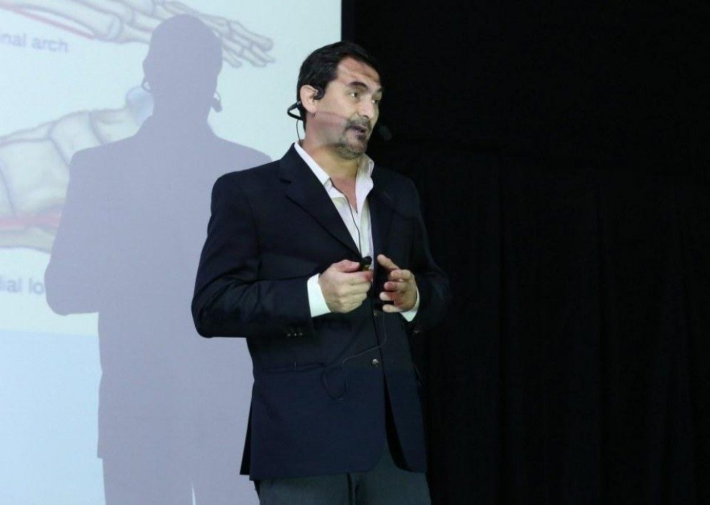
Del lado de Sporthesis · Necesitamos un referente único para decisiones y aprobaciones —entendemos que sería Lucas— y coordinación directa con el diseñador de la marca.
El plan asume que se avanza con el paquete recomendado. Si Sporthesis selecciona un alcance distinto, el cronograma se ajusta en consecuencia.
Visita al consultorio de Olivos. Relevamiento del producto y del proceso. Accesos a Meta Business, Google, Analytics, Tienda Nube, CRM y redes. Definición del objetivo comercial concreto de los próximos 90 días con Lucas.
Auditoría de campañas, activos digitales y conversión. Análisis de competencia directa e indirecta. Mapa de públicos y ejes de contenido. Manual de tono y voz. Revisión del CRM y definición de KPIs. Al cierre de esta etapa, Sporthesis tiene el diagnóstico completo y el plan escrito.
Desarrollo de la landing de campaña con formulario confiable y WhatsApp. Instalación de Tag Manager, Analytics, Pixel y eventos de conversión. Primera jornada de producción de 4 horas en el consultorio para generar la materia prima de las creatividades.
Reestructuración de Meta Ads con segmentación geográfica correcta y campañas por objetivo. Alta de Google Ads de búsqueda. Primeras tandas de creatividades propias por territorio. Arranca el testing de mensajes y ángulos.
Envío de conversiones de venta real desde el CRM hacia Meta y Google. La optimización pasa de perseguir consultas a perseguir ventas. El alcance exacto se define en la auditoría, según el CRM que use Sporthesis.
Revisión de resultados con datos propios: qué territorio convierte, qué mensaje funciona, cuál es el costo por venta real. Recién con ese número sobre la mesa se define si conviene aumentar la inversión, y en qué canal.
No fijamos metas numéricas antes de tener línea de base auditada: sería inventar. Definimos qué se mide desde el día uno y, al cierre de la Etapa 1, se acuerdan los objetivos concretos junto a Sporthesis.
| Métrica | Qué responde | Situación hoy | Cómo se trabaja |
|---|---|---|---|
| Consultas / mes | ¿Cuánta gente levanta la mano? | ~70 históricas | Se mantiene como línea de base. No es la métrica a maximizar en la primera etapa. |
| Conversión consulta → turno | ¿Cuántas consultas llegan a agendar? | Sin medir | Se instrumenta desde el CRM. Es el eslabón donde hoy se pierde más gente. |
| Conversión turno → venta | ¿Cuántos turnos terminan en plantilla? | Sin medir | Separar estos dos pasos permite saber si el problema es la atención o el precio. |
| Conversión consulta → venta | ¿Cuánto rinde el volumen que entra? | ~7% estimado | La métrica central de los primeros 90 días. |
| CPL por plataforma y territorio | ¿Cuánto cuesta cada consulta y de dónde viene? | Sin desagregar | Se abre por Meta / Google y por territorio para saber qué ángulo rinde. |
| Costo por venta (CAC) | ¿Cuánto cuesta cada plantilla vendida? | ~$178.000 estimado | Incluye medios + honorarios. Es el número que define si el canal es rentable. |
| Ventas atribuidas a pauta | ¿Cuánto factura el canal digital? | Sin atribución | Requiere la conexión CRM ↔ plataformas. Habilita optimizar a venta. |
| Tienda Nube | ¿El ecommerce crece? | ~1 venta / mes | Se mide en paralelo. Es el canal con mayor margen de mejora relativa. |
Regla · Ninguna de estas métricas se reporta sola. Cada reporte responde una sola pregunta: cuánto costó cada venta este mes, y por qué.
Preferimos dejarlo escrito antes de empezar.
Cada servicio es independiente y seleccionable. Marcamos con Recomendado el paquete que resuelve el diagnóstico completo, pero Sporthesis decide con qué avanzar. Los pares marcados como Opción A / B son alternativas —se elige una— y están explicadas en detalle en cada etapa.
Honorarios y medios, siempre separados. Lo que se ve arriba son honorarios de Popcorn. La inversión publicitaria es adicional, la define y abona Sporthesis, y sobre ella se aplica un 15% variable.
Todo seleccionable. Cada servicio funciona por sí solo. Nuestra recomendación es arrancar por la Estrategia inicial: es la única pieza que condiciona a todas las demás.
Sin “a definir”. Los únicos ítems sin precio en esta propuesta son los que dependen de un dato que todavía no tenemos —el CRM, el estado del sitio— y están explícitamente señalados como tales.
Comparación honesta. Hoy Sporthesis paga $480.000–$500.000 mensuales por gestión de pauta únicamente. Nuestra propuesta cubre estrategia, contenido, creatividades, dos plataformas de pauta, producción audiovisual y conversión. No es el mismo servicio a otro precio: es otro alcance.
Opción 1 · 100% anticipado. 3% de descuento sobre el valor de lista (el monto exacto va indicado bajo cada ítem).
Opción 2 · 50% al inicio y 50% al finalizar o a los 30 días, lo que ocurra primero. Se aplica el valor de lista.
Se facturan por mes adelantado, del 1 al 10 de cada mes. Contratos con revisión trimestral y ajuste por IPC.
Todos los valores están expresados en pesos y sin IVA.
Validez · Esta propuesta tiene vigencia hasta el 10/09/2026, 10 días corridos desde su emisión.
Sin fricción y con fechas concretas.
Sporthesis elige con qué avanzar desde la sección de inversión y nos lo envía en un clic.
Repasamos el alcance elegido, ajustamos lo que haga falta y confirmamos el cronograma.
Vamos a Olivos a conocer el producto, el Footscan y el proceso. Semana 1 del proyecto.
Accesos, kickoff y comienzo de la Etapa 1. El plan corre desde ese día.
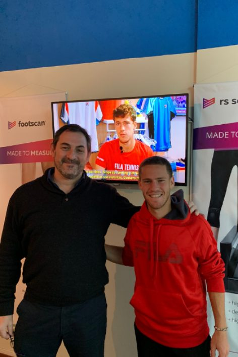
Producto propio, tecnología, 18 años de trayectoria y deportistas que la eligen. La materia prima está.
Nada de lo que proponemos requiere inventar una marca nueva. Requiere ordenar el circuito por el que hoy se pierden nueve de cada diez consultas.
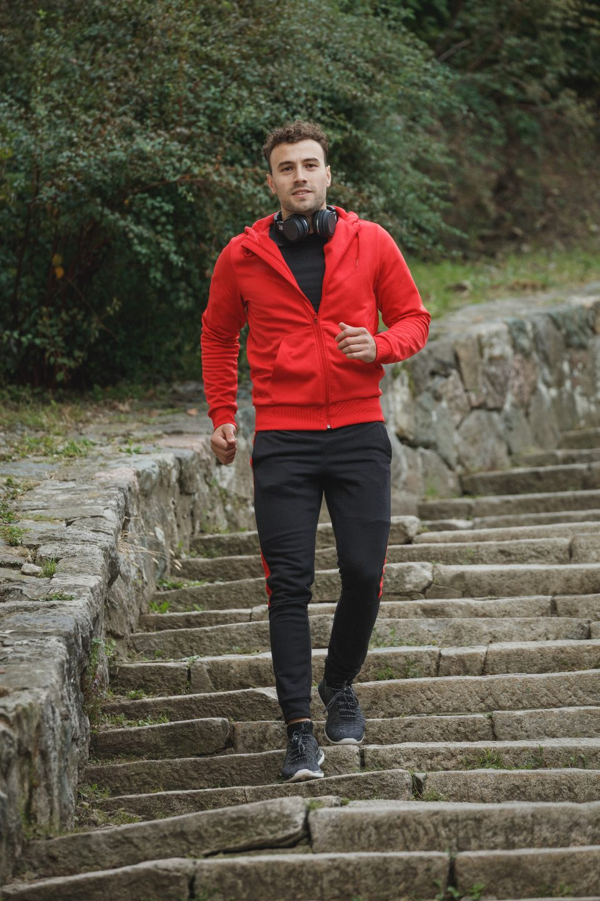
Primero ordenar. Después convertir. Y recién ahí, escalar. Ahí es donde están las ventas que hoy se pierden.